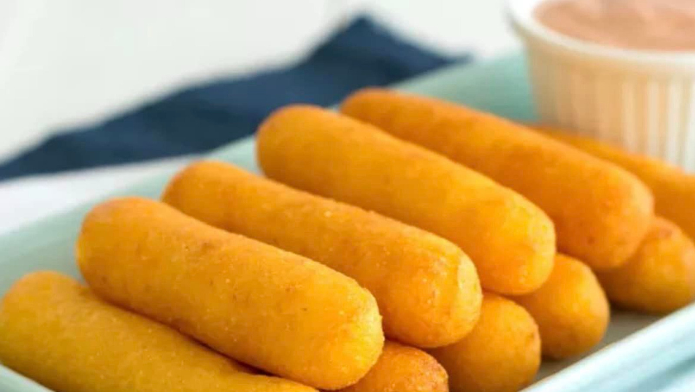

Sorullos Recipe!

Description
Sorullos is a classic Puerto Rican appetizer.
I mostly make it to go along with breakfast as they
taste great when dipped in a fried egg yolk or butter!
I'm sure you could find other ways to introduce this dish
with other meals, especially if you use a mayochup dip or even syrup.
Ingredients
The ingredients required to make Sorullos is very small.
In fact, it's likely you have many of the ingredients on hand!
Here's what we need:
- Cornmeal, 1 cup
- Salt
- Pepper
- Water
- Canola Oil
The measurements we need depend on how many servings you'd like
to make. For now 1 cup of cornmeal should work, but feel free
to add more if you like!
Salt and pepper is mainly to taste, so
you would add that to your liking as well.
Instructions
Despite the few ingredients we have here, it's actually a little
tricky to make these things!
- First, we're gonna take our canola oil and let it heat up in a pan. Then,
we'll bring some water to a boil. Leave both of those to heat up.
You'll know when the oil is ready when you see ripples. Make sure
you bring the water off the heater once it's boiling, we don't want
to burn ourselves.
-
Next, we'll pour our cornmeal into a large bowl. Don't forget to add
salt and pepper to taste! Make sure you mix it well so the salt and pepper
mix in well.
-
Once our cornmeal mixture is ready and seasoned and the oil is ready to go,
we're going to make a well for water in the cornmeal.
Start by sifting
all of the cornmeal to the side and pouring a little bit of the hot water in
the space.
-
Now that the well is ready, we're going to go ahead and start forming sorullos!
Roll some cornmeal and water in your hand so that it starts to stick.
Try and create
cylinders that aren't too thick in the middle, otherwise it might not cook well inside.
Then, when a sorullos is formed, you can gently place it into the oil.
Be careful that
you don't burn yourself!
-
Repeat the process until cornmeal is depleted. Make with some fried eggs and meat
of your choice, and dip it in some butter. Tasty! Enjoy your sorullos!
Home